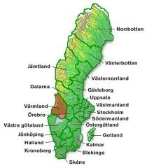
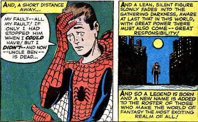

Civil Disobedience in Python
Henrik Blidh
@hbldh
Hello and welcome to this presentation called Civil Disobedience by Python.
Värmland

I'm from Värmland, located here in Sweden if you do not know.
Värmlandstrafik
The public transport company in Värmland, Värmlandstrafik, has at the start of this year removed
several countryside train stations.
This has been in discussion for a long time and has been opposed by many commuters, politicians and general believers in an accessible countryside.
Someone got annoyed...
Combining this with the worst onboard wifi imaginable made someone decide to send a message...
WTF?
Ocular inspection of paper slip even though you have registered the transaction of a card?! In 2017?!
There must be a better way...
Värmlandstrafejk
The frustrated individual mentioned before, going by the moniker InfuriatedTraveler created the Python package varmlandstrafejk, a simple image manipulation library for generating counterfeit receipts.
Using a scanned receipt images as templates and building blocks, it uses numpy to modify a grayscale image matrix with card number and valid dates.
Stick this behind a flask webapp that generates and delivers these receipts, and the civil disobedience is (almost) done.
Making it available to the public
- Use Tor and Whonix virtual boxes.
- Create anonymous Gmail account
- Create Github account and deposit code there.
- Register AWS account and spin up a t2.micro instance
- Deploy Flask app behind nginx with Let's Encrypt cert.
- Register free domain (varmlandstrafejk.tk)
- Done.
What do I want to say with this?
With great power comes great responsibility
Python == Superpower
I hope you realize the power you have available at the tips of your fingers.
You can effect social change by coding!
Make a difference!
So, what happened?
Did they resume traffic at the stations again?
No.
They finally gave every train warden a portable reader.
You can't win them all.
At least they made a move towards the digital world...
Thank you for listening!